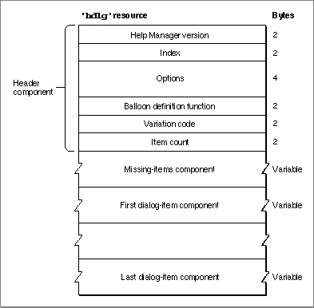
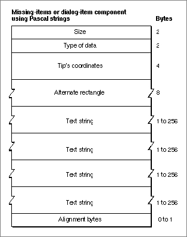
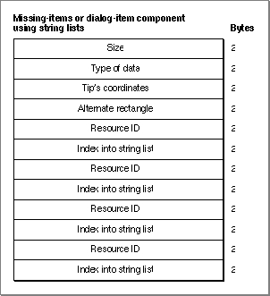
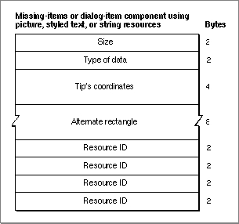
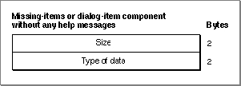

The Dialog-Item Help Resource
You can provide help balloons for individual items in a dialog box or an alert box by supplying a dialog-item help resource, which is a resource of type'hdlg'. You specify different help balloons for various states of an item--by highlight value if the item is a control, and by enabled or disabled states for items that are not controls.To associate an
'hdlg'resource with a particular alert box or dialog box, either you must include an item of typeHelpItemin the box's item list ('DITL') resource, or you must create an'hwin'resource. Listing 3-8 on page 3-55 shows how to use an item of typeHelpItem--and Listing 3-10 on page 3-67 shows you how to use an'hwin'resource--for associating an'hdlg'resource with a particular alert box or dialog box. For detailed information about using an item of typeHelpItem, see "Adding a Help Item to an Item List Resource" on page 3-57. For detailed information on using an'hwin'resource, see "Associating Help Resources With Static Windows" on page 3-63.All
'hdlg'resources must have resource IDs greater than 128.The format of a Rez input file for an
'hdlg'resource differs from its compiled output form. This section describes the structure of a Rez-compiled'hdlg'resource. If you are concerned only with creating'hdlg'resources, see "Providing Help Balloons for Items in Dialog Boxes and Alert Boxes" on page 3-47 for a detailed description, using several code samples, of how to use Rez input files to create'hdlg'resources.An
'hdlg'resource consists of a header component, a missing-items component, and a variable number of dialog-item components. Figure 3-30 shows the general structure of a compiled'hdlg'resource.Figure 3-30 Structure of a compiled dialog-item help (
'hdlg') resource
If you examine a compiled version of an'hdlg'resource, you find that the header component consists of the following elements:The missing-items component always follows the header component of an
- Help Manager version. The version of the Help Manager to use. This is usually specified in a Rez input file with the
HelpMgrVersionconstant.- Index. An index (starting with 0) into an item list (
'DITL') resource. The Help Manager adds the value of this index to the number of the first item in the item
list resource and then associates the result with an item number within the item list resource; therefore, index 0 corresponds to item 1 in the item list resource (because 0 plus 1 equals 1). The Help Manager then uses the first dialog-item component in the'hdlg'resource to provide help for the item to which this index corresponds. Subsequent dialog-item components specify help messages for subsequent items in the item list resource. For example, when 4 is specified as the index, the first dialog-item component specifies help messages for the fifth item in an item list resource. (As explained earlier, either an item of typehelpItemin the item
list resource or an'hwin'resource is used to associate the messages in the dialog-item components of this'hdlg'resource with the items of a particular dialog box or alert box.)- Options. The sum of the values of available options, described in "Specifying Options in Help Resources" beginning on page 3-22.
- Balloon definition function. The resource ID of the window definition function used for drawing the help balloon. The standard balloon definition function is of type
'WDEF'with resource ID 126; this can be specified by the number 0 in the Rez input file.- Variation code. A number signifying the preferred position of the help balloon relative to the hot rectangle. The balloon definition function draws the frame of the help balloon based on the variation code specified here. The eight variation codes and how they affect the standard balloon definition function are illustrated in Figure 3-4 on page 3-9.
- Item count. The number of remaining components--that is, the missing-items component plus all dialog-item components--defined in the rest of this resource.
'hdlg'resource. Then a variable number of dialog-item components are stored in this resource. The Help Manager determines the end of the'hdlg'resource by using the item count information in the header component. The Help Manager determines the type of each component by its order in the resource.The structures of the missing-items component and the dialog-item components depend on identifiers specified inside the components. The identifiers used in a Rez input file are described in "Specifying the Format for Help Messages" on page 3-21.
The missing-items component and the dialog-item components can each specify four different help messages:
An empty string or a resource ID of 0 for a message in any dialog-item component causes the Help Manager to use the appropriate help message contained in the missing-items component.
- First help message.
- In the missing-items component, this is the help message both for missing, active, unselected controls (that is, those with highlight values of 0) and for missing enabled items that are not controls.
- In dialog-item components, this is the help message for an active, unselected control (that is, one with a highlight value of 0) or for an enabled item that is not
a control.- Second help message.
- In the missing-items component, this is the help message both for missing dimmed controls (that is, those with highlight values of 255) and for missing disabled items that are not controls.
- In dialog-item components, this is the help message for a dimmed control (that is, one with a highlight value of 255) or for a disabled item that is not a control.
- Third help message.
- In the missing-items component, this is the help message for missing active controls that are checked (that is, those with highlight values of 1).
- In dialog-item components, this is the help message for an active control that is checked (that is, one with a highlight value of 1).
- Fourth help message.
- In the missing-items component, this is the help message for missing, selected controls with highlight values between 2 and 253.
- In dialog-item components, this is the help message for a selected control with any highlight value between 2 and 253.
Since they both adhere to the formats specified by the previously described identifiers, the missing-items component and the dialog-item components can have similar structures. The Help Manager determines the end of a component by examining its length, which is stored in the first 2 bytes of the component.
Figure 3-31 shows the structure of a component that stores its help messages as Pascal strings within the
'hdlg'resource itself.Figure 3-31 Structure of an
'hdlg'component compiled with theHMStringItemidentifier
If you examine a compiled version of an'hdlg'resource, you find that a component identified in a Rez input file by theHMStringItemidentifier consists of the following elements:Figure 3-32 shows the structure of an
- Size. The number of bytes contained in this component.
- Type of data. The value 1 is specified here when the help messages are stored as Pascal strings within this component.
- Tip's coordinates. The coordinates of the help balloon's tip. The tip's coordinates are local to the item's display rectangle.
- Alternate rectangle. The coordinates for a rectangle used by the Help Manager for transposing the tip if a help balloon does not fit onscreen. These coordinates are local to the item's display rectangle.
- Text string. The first help message (as previously described).
- Text string. The second help message (as previously described).
- Text string. The third help message (as previously described).
- Text string. The fourth help message (as previously described).
- Alignment bytes. Zero or one bytes used to make the previous text strings end on a word boundary.
'hdlg'component that specifies its help messages as text strings stored in string list ('STR#') resources.Figure 3-32 Structure of an
'hdlg'component compiled with theHMStringResItemidentifier
If you examine a compiled version of an'hdlg'resource, you find that a component identified in a Rez input file by theHMStringResItemidentifier consists of the following elements:Three more pairs of resource IDs and their index numbers follow. The text strings referenced by these pairs are used for the second, third, and fourth help messages, respectively.
- Size. The number of bytes contained in this component.
- Type of data. The value 3 is specified here when the help messages for this component are stored in string list (
'STR#') resources.- Tip's coordinates. The coordinates of the help balloon's tip. The tip's coordinates are local to the item's display rectangle.
- Alternate rectangle. The coordinates for a rectangle used by the Help Manager for transposing the tip if a help balloon does not fit onscreen. These coordinates are local to the item's display rectangle.
- Resource ID. The resource ID of an
'STR#'resource.- Index into the string list resource. A number used as an index to a particular text string within the
'STR#'resource. This text string is used for the first help message (as previously described).Figure 3-33 shows the structure of an
'hdlg'component that specifies its help messages in picture ('PICT') resources, styled text ('TEXT'and'styl') resources, or string ('STR ') resources.Figure 3-33 Structure of an
'hdlg'component compiled with theHMPictItem,HMTEResItem, orHMSTRResItemidentifier
If you examine a compiled version of an'hdlg'resource, you find that a component identified in a Rez input file by either theHMPictItem,HMTEResItem, orHMSTRResItemidentifier consists of the following elements:Three more resource IDs follow; the Help Manager uses these resources (either
- Size. The number of bytes contained in this component.
- Type of data.
- The value 2 is specified here when the help messages for this component are stored in
'PICT'resources.- The value 6 is specified here when the help messages for this component are stored as styled text--that is, in both
'TEXT'and'styl'resources.- The value 7 is specified here when the help messages for this component are stored in
'STR 'resources.- Tip's coordinates. The coordinates of the help balloon's tip. The tip's coordinates are local to the item's display rectangle.
- Alternate rectangle. The coordinates for a rectangle used by the Help Manager for transposing the tip if a help balloon does not fit onscreen. These coordinates are local to the item's display rectangle.
- Resource ID.
- The resource ID of a
'PICT'resource when the value 2 is specified as the type of data. The Help Manager uses the picture contained in this resource for the first help message (as previously described).- The resource ID common to both a
'TEXT'and an'styl'resource when the value 6 is specified as the type of data. The Help Manager uses the styled text specified by these resources for the first help message.- The resource ID of an
'STR 'resource when the value 7 is specified as the type of data. The Help Manager uses the text contained in this resource for the first help message.'PICT','TEXT'and'styl', or'STR ') for the second, third, and fourth help messages, respectively (as previously described).Figure 3-34 shows the structure of an
'hdlg'component that specifies no help messages.Figure 3-34 Structure of an
'hdlg'component compiled with theHMSkipItemidentifier
If you examine a compiled version of an'hdlg'resource, you find that a component identified by theHMSkipItemidentifier consists of the following elements: